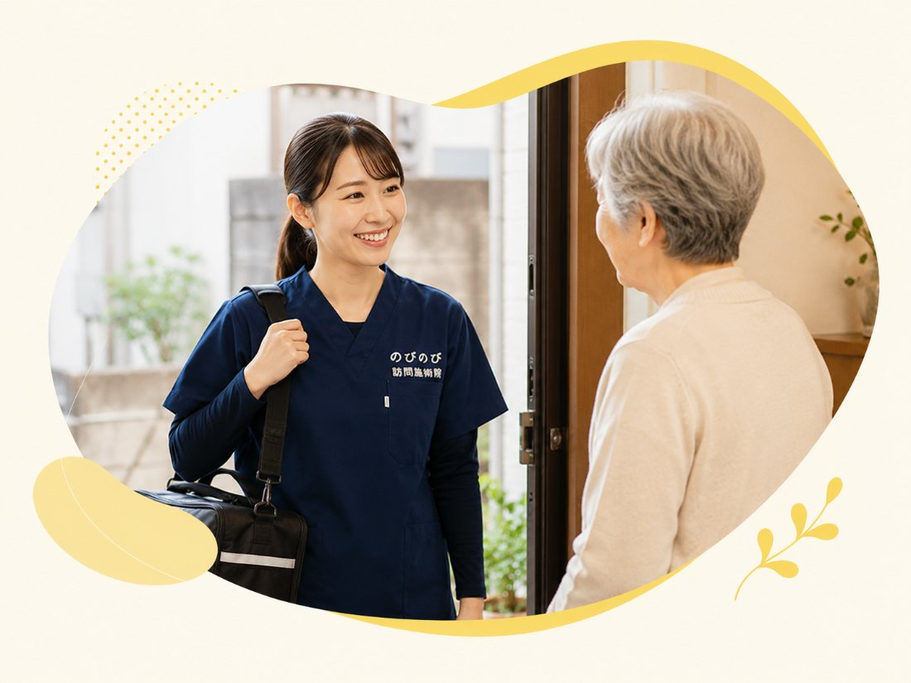

デイサービスにヘルパー、訪問リハビリと組み合わせていくと、介護保険の支給限度額はあっという間に埋まります。「もう1日も増やせない」。ケアマネジャーやご家族なら、だれもが一度はぶつかりやすい壁です。ところが、この限度額の「外側」に、削らずに足せる一手があります。医師の同意にもとづく医療保険（療養費）で受ける訪問鍼灸マッサージです。なぜ限度額の計算に乗らないのか、実際にいくらで足せるのかを、具体的な数字でたどっていきます。
この記事のポイント
介護保険の限度額がいっぱいでも、訪問鍼灸マッサージは別枠で足せます。医療保険（療養費）のサービスで、区分支給限度基準額の計算に含まれないためです。要介護2での試算と、ケアマネジャーに通しやすい伝え方もまとめました。デイ・ヘルパー・訪問リハを削らずに追加でき、1回は総額3,950円・1割の方で約395円が目安です。
「もう枠がない」と言われて手が止まるとき
介護保険には、要介護度ごとに1か月の利用上限が決められています。区分支給限度基準額、いわゆる限度額です。デイサービスを増やし、生活援助のヘルパーを入れ、訪問リハビリも組み込む。本人に必要なものをプランへ積んでいくと、この上限は案外あっけなく埋まります。
困るのは、埋まった先に残る選択肢が「何かを削る」しかない点です。デイをあと1日足したいのに空きがない。だからといって、いま入っているヘルパーもリハビリも外せない。超過分は全額自己負担になるため、ご家族もケアマネジャーも、そこで体のケアを諦めかけてしまいます。要支援や要介護1から2のように上限が低めの方だと、この行き詰まりは早めにやってきます。
ただ、発想を「枠の中でやりくりする」から「枠の外に足せるものはないか」へ切り替えると、調整の余地が出てきます。その代表格が、医療保険で受ける訪問鍼灸マッサージです。
介護保険の限度額に、そもそも乗らない仕組み
理由は単純で、お金の出どころが違うからです。デイ・ヘルパー・訪問リハビリは介護保険の給付なので、限度額という同じ枠の中で単位が計算されます。訪問鍼灸マッサージはそこに含まれません。医師の同意にもとづく医療保険（療養費）のサービスで、まったく別の財源から支払われるからです。
そのため、限度額を上限まで使い切っている方でも、いまのプランを1つも削らずに上乗せできます。介護保険側の管理表には1円も計上されません。要介護認定を受けているかどうかも問われず、前提になるのは医師の同意書だけです。制度全体の違いについては、「大阪で利用する前に知っておきたい制度の違い」もあわせて読むと整理しやすいはずです。
要介護2のプランで試算してみる
言葉より数字のほうが早いので、具体的にたどります。要介護2の方の限度額は、1単位10円で換算するとおおむね月19万7千円ほど。ここへデイサービス週3回、生活援助のヘルパー、訪問リハビリ週2回を入れると、枠はほぼ満杯です。「あと1日どこかに」と思っても、もう入りません。
この状態のまま、訪問鍼灸マッサージを週2回足すとどうなるか。1回の総額は3,950円で、1割負担の方なら1回およそ395円。週2回なら月およそ3,160円です。2割の方で約790円、3割の方で約1,185円が1回の目安になります。この費用は医療保険の別会計から出るので、満杯の限度額は満杯のまま、体のケアだけが純粋に増えます。
訪問リハビリを使っている方なら、リハビリのない曜日に差し込む形も取れます。介護保険側のプランには手を触れず、生活のリズムに合う曜日と時間でうかがえる。この足し算の余白が枠の外にあることが、行き詰まったプランの小さな抜け道になります。
別枠で足せる中身と、重ねられない部分
受けられるのは、はり・きゅうと、こわばった筋肉をゆるめる手技、そして関節の動く範囲を保つ機能訓練を組み合わせたケアです。機能訓練は、この鍼灸に加えて行います。これらに追加の料金はかかりません。療養費の対象になる症状は、神経痛・リウマチ・頸肩腕症候群・五十肩・腰痛症・頸椎捻挫後遺症といった慢性的な痛みやしびれが中心です。痛みやこわばりがやわらぎ、動きやすさを保ちやすくなることが期待できますが、感じ方には個人差があり、病気そのものを治すものではありません。
1回はおおむね20分から30分。決まったメニューを一律にこなすのではなく、その日いちばん気になる部位に時間を使います。脳梗塞のあとで片側が動かしにくい方には肩や手指をていねいに動かし、腰や膝の痛みには周りの筋肉をゆるめて負担を軽くする、といった具合です。
ひとつ注意したいのは、同じ部位について医療保険の訪問リハビリと鍼灸マッサージを同時に算定できない点です。腰なら腰、というように、狙う場所が重なると片方しか認められません。実際には部位や曜日を分けて組み立てれば併用できますので、迷ったら現在のリハビリ内容を教えていただければ、重ならない形をこちらで提案します。
費用と、始めるまでの段取り
費用は1回の総額が3,950円で、訪問にかかる分もこの中に含まれます。別立ての出張費をいただくことはありません。金額があらかじめ決まっているため月々の見通しが立てやすく、ご家族にも「1回いくら」と説明しやすいのが利点です。明細は月ごとにお渡しします。詳しい自己負担の仕組みは「料金はいくら？医療保険の自己負担額と仕組み」をご覧ください。
医療保険で受けるので、医師の同意書が必要です。要介護認定の有無は問いません。同意書は用紙の準備からかかりつけ医への依頼まで、のびのびが段取りします。ケアマネジャーやご家族の手間が最小限で済むように進めるので、「書類が面倒そう」という理由で見送る必要はありません。
ケアマネジャーに通しやすい伝え方
担当者会議やプラン調整の場では、「介護保険とは別枠の、医療保険の鍼灸マッサージを入れたい」と一言添えると話が早く進みます。限度額の計算に入らない前提が共有できていれば、枠の残りを気にする議論を飛ばして、曜日と回数の相談に移れるからです。回数は週1回から2回を目安に提案することが多いものの、数を追うより、その方に必要なペースを一緒に決める形が向いています。
ケアマネジャーの立場からすると、限度額の管理表とにらめっこせずに、体そのもののケアを1つ差し込める選択肢が手元に増えるということです。デイやヘルパーが暮らしを支える役割だとすれば、こちらは体を手入れする役割で、中身がぶつかりません。ですから、上限まで埋まったプランにもきれいに乗ります。担当者会議での位置づけや記載のしかたは「担当者会議での扱いとケアプラン記載」で詳しくご紹介しています。
限度額の壁にぶつかったら、まず相談を
「限度額がいっぱいで、この方にどう手を打てばいいか」。そうしたご相談を、ケアマネジャーからも、ご家族から直接も、日頃から数多くいただきます。のびのびは大阪市・北摂・阪神間を中心にうかがっています。現在のサービス利用状況と気になっている症状を教えていただければ、対象になりそうかをより具体的にお伝えできます。訪問鍼灸マッサージがいつでも最適とは限りませんので、合わないと判断すればその旨も正直にお話しし、無理な受け入れはしません。枠の壁に突き当たったとき、こういう一手もあったと思い出していただければ十分です。まずは今の状況を、率直にお聞かせください。
よくある質問
本当に限度額の計算に影響しないのですか？
はい。訪問鍼灸マッサージは医療保険（療養費）のサービスで、介護保険の区分支給限度基準額とは別の会計です。多くの場合、限度額の計算には含まれないため、今のサービスを減らす必要はありません。
限度額を使い切っていても、追加できますか？
できます。枠の外側から足す形になるので、デイやヘルパー、訪問リハビリを限度額いっぱいまで使っている方でも、それらを削ることなく上乗せできます。
デイやヘルパーと併用しても、内容がかぶりませんか？
かぶりません。デイやヘルパーは暮らしを支える役割、訪問鍼灸マッサージは体そのものを手入れする役割です。役割が違うので、併用するとむしろ補い合う形になります。
週何回くらい足すのが目安ですか？
お身体の状態によりますが、週1〜2回を目安にご提案することが多いです。回数を追うのではなく、その方に必要なペースを一緒に決めます。
同意書は誰が用意するのですか？手間がかかりませんか？
用紙の準備からかかりつけ医への依頼まで、のびのびがお手伝いします。要介護認定は不要です。ケアマネジャー・ご家族の手間は最小限で済みます。
費用は毎回いくらで、追加の出張費はかかりますか？
1回で総額3,950円、1割の方で1回およそ395円が目安です。訪問にかかる費用は料金に含まれ、別立ての出張費はいただきません。明細は月ごとにお渡しします。
この記事の根拠
はり・きゅう、あん摩マッサージ指圧の療養費は、厚生労働省が定めた取扱いにもとづく制度です。制度そのものをご自身で確かめたいときは、厚生労働省の療養費について（新しいタブで開きます）をご覧ください。「被保険者のみなさまへ」の案内も、同じページからたどれます。